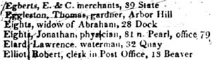

|
by Stefan Bielinski Catherine Brooks was born in Albany in August 1749. She was the youngest of the three daughters of city residents Jonathan and Rebecca Tatten Brooks. Her parents settled on the "Southside" - the home of many Albany newcomers. In June 1770, she married recently arrived sailmaker Abraham Eights at Albany's St. Peter's Church. Over the next twenty-two years, that marriage produced eleven children who were baptized in three Albany churches. Catherine made her home in a house her husband recently had built on the Albany waterfront. Over the next half century, Catherine Eights raised her large family in the modest house at what became 28 Dock Street - next to the Eights sail yard. This production-class family was relatively affluent - owning several parcels of land and having several slaves to help out in the home and shop. Catherine's son and grandson further distinguished the Eights name in nineteenth-century Albany. Patriarch Abraham Eights died in 1820. His will left Catherine real and personal property during her widowhood. Widow Catherine Eights died in 1829 at age eighty.
first posted: 7/5/01 |